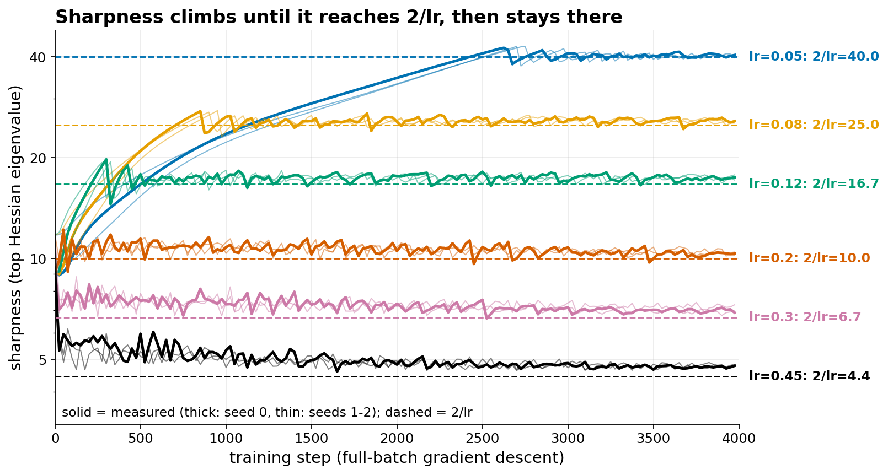
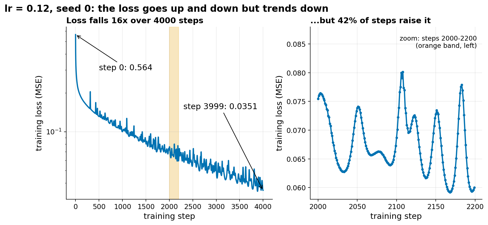
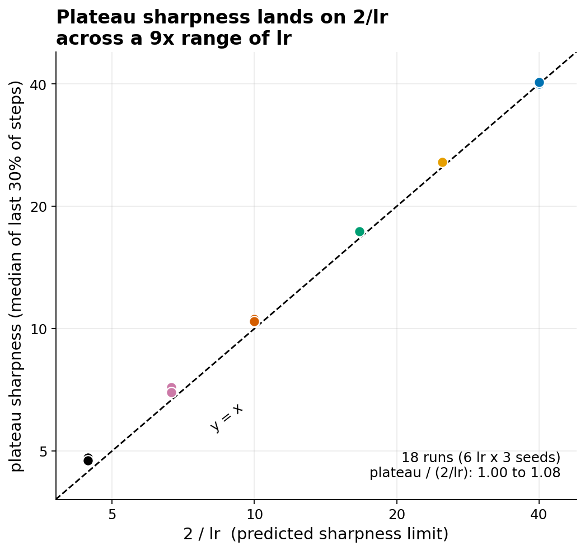
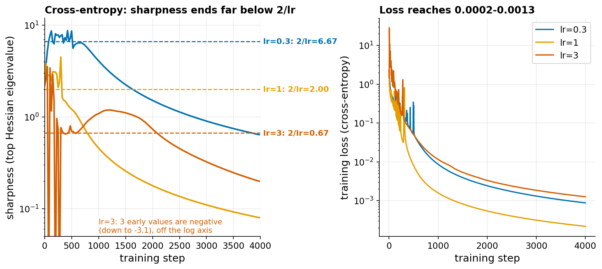

Edge of stability
Extends Optimizer race (Lab 1).
The idea
Setting. Full-batch gradient descent (GD) uses all training examples for every update, so there is no sampling noise. The update is w ← w - lr * grad L(w), with a constant learning rate lr.
Sharpness. The Hessian is the matrix of second derivatives of the loss with respect to the weights. Its largest eigenvalue is called the sharpness. It measures how steeply the loss curves in the most curved direction. Goodfellow ch 4 and ch 8 (section 8.2.1, ill-conditioning) discuss the same quantity.
Classic step-size argument. Take a one-dimensional quadratic loss L(w) = 0.5 * s * w^2, where s is the sharpness. One GD step gives w ← (1 - lr*s) * w. The distance to the minimum is multiplied by |1 - lr*s| at every step:
| lr * s | factor |1 - lr*s| | what happens |
|---|---|---|
| 0.5 | 0.5 | converges smoothly |
| 1.0 | 0 | lands on the minimum in one step |
| 1.9 | 0.9 | converges, flipping sign each step |
| 2.0 | 1.0 | bounces between +w and -w forever |
| 2.1 | 1.1 | diverges |
So GD is stable only if s < 2/lr. On a real network the loss is not a quadratic, but the same rule applies locally. The textbook advice is: pick lr small enough that sharpness stays below 2/lr.
What is observed. Cohen et al. (2021) trained many networks with full-batch GD. Two phases appear. First, the sharpness rises during training (progressive sharpening). Second, when it reaches 2/lr it stops rising and hovers around 2/lr. It does not go above by much, and the training does not diverge. The loss becomes non-monotone (it goes up on many steps) but still decreases over long times. Hence the name: training runs at the edge of the stable region.
Why it is useful for a course. It shows that the learning rate does not just set the speed. It also decides which kind of region of the loss landscape training ends in: a large lr ends in a flat region (sharpness 2/lr is small), a small lr allows a sharper one. This links to ch 8 (choice of step size, curvature) and to ch 7 only loosely: flatness is often discussed as related to generalization, but that link is not established here and we did not test it. Ch 6 enters through the loss choice (MSE or cross-entropy).
Established vs debated.
- Established (empirical): the 2/lr plateau, in many architectures with full-batch GD, for MSE and for cross-entropy (Cohen et al.). With cross-entropy they note one exception: the sharpness often drops near the end of training, once the loss is small. Our runs confirm the plateau for MSE.
- Partly understood (theory): Damian, Nichani and Lee (2022) give an argument for why the sharpness is pushed back below 2/lr when it overshoots, based on the third derivative of the loss. It needs assumptions that are not checked for real networks.
- Related but different: Lewkowycz et al. (2020) study the large-lr "catapult" phase on wide networks: when lr starts above 2/sharpness, the loss first grows, then the sharpness drops below 2/lr and the loss falls. Our two largest lr values also start above 2/lr and the sharpness drops in the first steps, but the loss did not grow first (except in one run, lr 0.45 seed 2), so we cannot say it is the same mechanism.
- Debated: how much this matters with mini-batches and with adaptive optimizers, and whether it explains generalization.
References:
- Cohen, Kaur, Li, Kolter, Talwalkar (2021), Gradient Descent on Neural Networks Typically Occurs at the Edge of Stability.
- Damian, Nichani, Lee (2022), Self-Stabilization: The Implicit Bias of Gradient Descent at the Edge of Stability.
- Lewkowycz, Bahri, Dyer, Sohl-Dickstein, Gur-Ari (2020), The large learning rate phase of deep learning: the catapult mechanism.
What students would do
This could be a short segment or a replacement for the main experiment, in a guided PyTorch notebook.
- Load 2000 FashionMNIST images (10 classes). Center each pixel and scale the inputs so their global standard deviation is 0.5. Build a 784-64-64-10 MLP with tanh. Loss: MSE between the network output and the one-hot label.
- Train with full-batch GD for 4000 steps at one lr. Plot the loss. Students see it fall but with spikes.
- Write the Hessian-vector product with double backward (
torch.autograd.gradtwice). No Hessian matrix is built. - Estimate the sharpness with power iteration: apply the Hessian-vector product repeatedly to a vector; the Rayleigh quotient converges to the largest eigenvalue. The prototype uses 10 iterations per measurement, warm-started from the previous vector, and measures every 25 steps on the first 1000 images.
- Add the measurement to the training loop and plot sharpness against step, with the 2/lr line.
- Class experiment. Each student runs one learning rate (from the grid 0.05, 0.08, 0.12, 0.2, 0.3, 0.45) and a seed, and reports the plateau sharpness (median of the last 30% of the measurements). Nothing else varies.
- Class plot: x = 2/lr, y = plateau sharpness, one point per run, with the line y = x. Points on the line confirm the effect.
Questions for the 10-minute discussion:
- Why would the sharpness stop at 2/lr and not at, say, 3/lr? (Use the table above.)
- The loss goes up on many steps. Is the run still training? What does the loss curve show over 4000 steps?
- Large lr values (0.3, 0.45) start already above 2/lr, so the sharpness first drops. What does that tell us about what a big lr does at the start?
- If you want a flat region, which lr do you pick? Is a flat region better? (Open question, do not expect an answer.)
What our prototype found
Setup of the main run: 2000 FashionMNIST images, 10 classes, MLP 784-64-64-10 with tanh, inputs scaled to standard deviation 0.5, MSE loss, 4000 full-batch GD steps, sharpness every 25 steps, 6 learning rates x 3 seeds. The saved file has no settings record, so one run (lr 0.2, seed 0) was reproduced with these settings to confirm them: plateau 10.4 (same as saved), peak 12.2 (same), final loss 0.0243 (saved: 0.0232).




| lr | 2/lr | plateau sharpness (mean of 3 seeds, range) | plateau / (2/lr) | final loss (mean) |
|---|---|---|---|---|
| 0.05 | 40.0 | 40.3 (40.0-40.4) | 1.01 | 0.0672 |
| 0.08 | 25.0 | 25.8 (25.7-25.8) | 1.03 | 0.0543 |
| 0.12 | 16.7 | 17.4 (17.4-17.4) | 1.04 | 0.0366 |
| 0.2 | 10.0 | 10.4 (10.4-10.5) | 1.04 | 0.0267 |
| 0.3 | 6.7 | 7.1 (7.0-7.2) | 1.06 | 0.0153 |
| 0.45 | 4.4 | 4.8 (4.7-4.8) | 1.07 | 0.0097 |
Other prototype runs agree. A second grid (2 seeds, 8 learning rates from 0.04 to 0.45, settings not recorded) gives plateaus of 4.9 to 33.6 for 2/lr from 4.4 to 50, also near the line except for lr 0.04 (33.0 against 50) where the sharpness had not yet reached 2/lr.